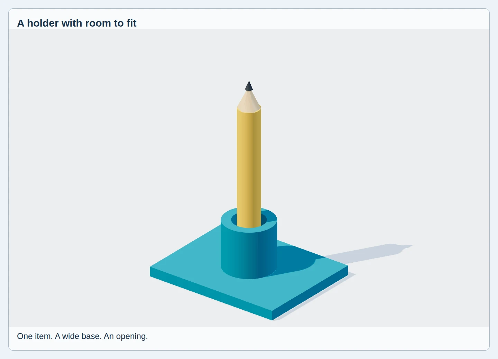
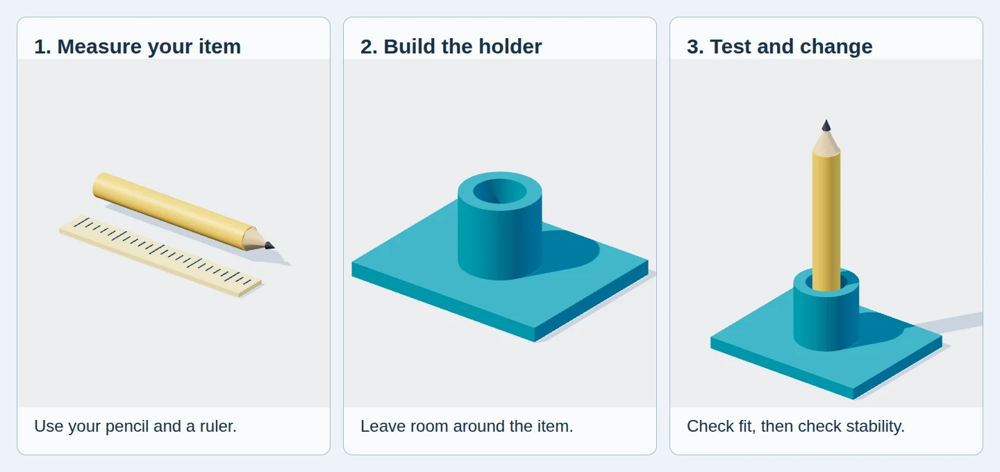
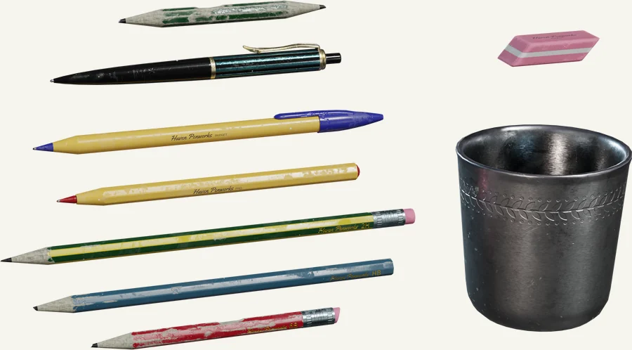
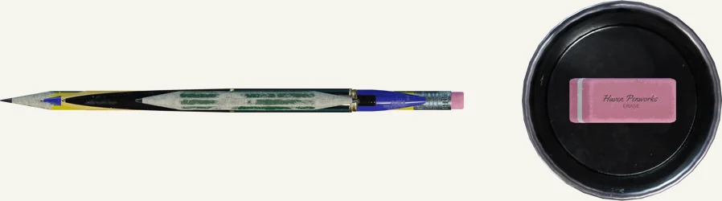
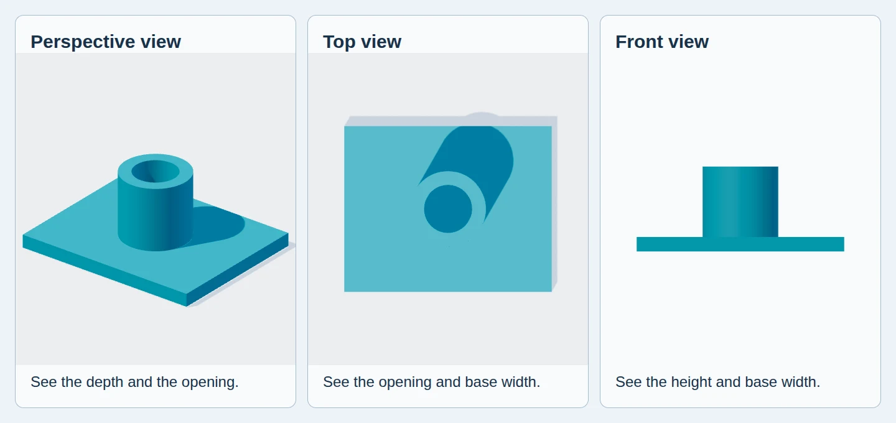
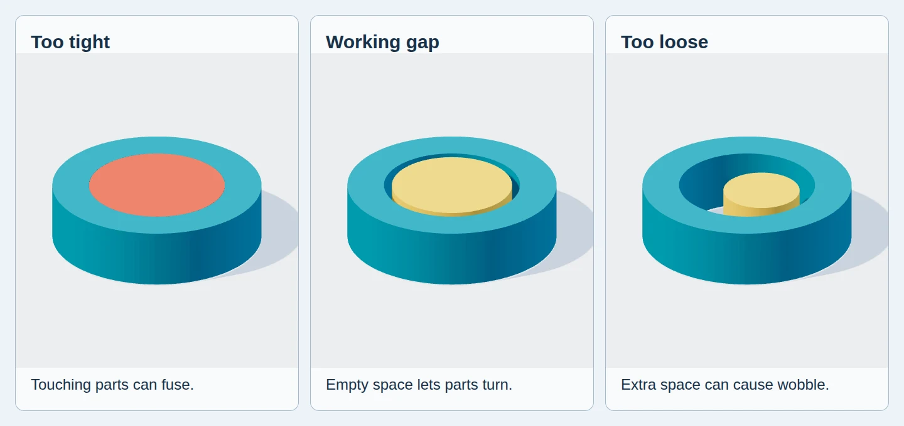
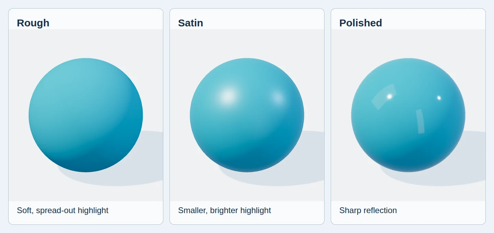
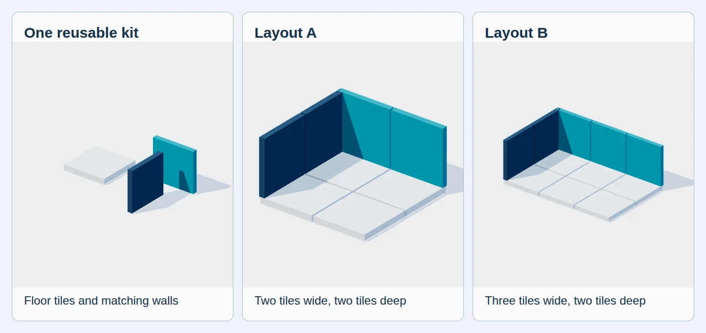
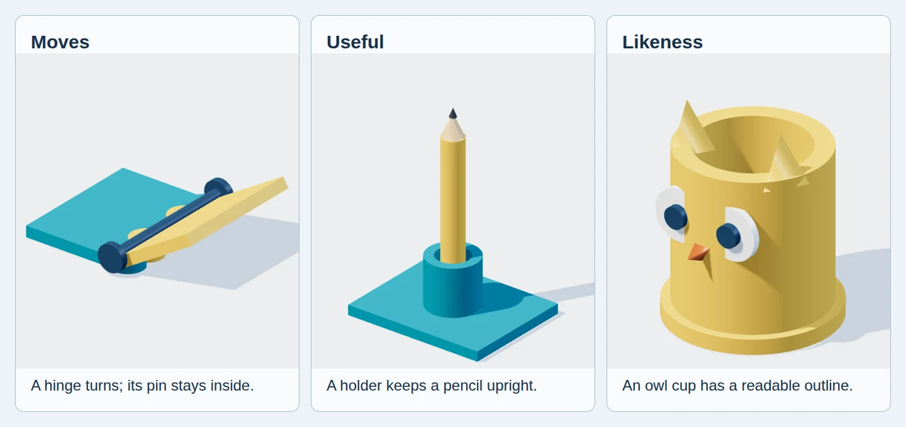

Grades 6–8
Show two views, one measured size, your first version, and your improved version. Explain what your test helped you change.
Grades 6–12 · Design studio
Make something useful.
Test it. Make it better.
Start with a holder for one item on your desk. Learn the skills you need as you build, then choose where your model goes next.
First session: about 25–40 minutes.
Bring a pencil, ruler, and paper. Cardboard or a modeling app works.

First project
Design something that holds one school item: a pencil, a note, a book, or a phone. Your object needs a stable base and an opening, slot, or raised edge that does the holding.
Pick one item: a pencil, note, book, or phone. Use paper and cardboard, or open a blank model in Workbench. A printer is optional.
Your goal: the item goes in and out easily, and the holder stays upright.
This pencil helper is one possible answer. Use it to understand the base and opening. Measure your own item, build a quick version, and change what the test reveals.



Measure the part of the item your holder will touch. Write the size in millimeters (mm). If you do not have a ruler, trace the item and label the sketch “not measured.”
Keep: the item name and one measurement or tracing.
Draw a top view and a front view. Add a base and an opening, slot, or edge. Build a quick version from cardboard or simple 3D shapes.
Keep: your sketch and first model. Save an editable digital file before exporting.
Put the item in, take it out, and watch for tipping. With a digital-only model, compare the measured sizes and inspect two views. Label your result “preview only” until you test a physical version.
Keep: a photo, screenshot, or short note about what happened.
Fix one problem: widen the base, resize the opening, or change the height. Repeat the same test with the same item.
Keep: both versions and one sentence: “I changed ___ because the first test ___.”
Show two views, one measured size, your first version, and your improved version. Explain what your test helped you change.
Write a target before testing, such as “holds my phone upright through five removals.” Record the result for both versions and explain the tradeoff you made.
Need a different way to explain? Use a labeled drawing, photos with captions, or a spoken explanation. Include the same plan, test, and change.
Check a step when you have its evidence. Your checks stay in this browser when storage is available.
Class checkpoint: Can a partner identify what the object holds, find the feature that holds it, and name the change that made it work better?
Pick one item from your desk. Measure it or trace around it, then decide what a successful holder must do. Record the first result and one change; a labeled drawing or spoken explanation can record your result.
Design record: “My first version ___ when ___. I changed ___ so that ___.” Test the revised version with the same item.
Open this whenever a word slows you down.
Shared skills
Stuck on a step? Open the workshop for that skill. Practice on its sample, then return to your own desk helper. You do not need to finish every workshop before building.

Practice orbiting the sample, then show the front, side, and top of your helper.
Sketch your helper from top and front; add one measurement. Use the drafting studio if you want a measured digital drawing.
Practice on the sample block, then resize your helper and save or photograph both versions.
Practice cutting the sample wall. Add a slot or pocket to your own helper only if the design needs it.
Ready for a route: Show your helper from two views, identify one size, and explain what changed after testing. Reopen a digital project if you made one.
Choose an outcome
Choose one route with your teacher. Each route has a different final result. Keep using your desk helper, or agree on a new project before you start.
Physical objects
Design a measured object, inspect its export, and plan a print. A printer is optional: a slicer preview and a proposed test count as planning evidence.

Use the measured drawing you made in the shared skills.
Save the editable model. Export an STL (a file describing the outside shape), open it in the slicer, and check one size against your plan.
Compare orientations, support needs, and bed contact in the slicer. Use the teacher-approved printer and material profile.
Test the clearance for a fidget before designing parts that move.
Finish when: The imported size matches your plan and you can explain a print decision using a preview or test result.
Models and images
Develop one model and present it clearly. Use the browser workshops first; the Blender instructions are deeper reference.

Use the props workshop to improve its shape and silhouette.
Choose the surface, camera, and light. Render (make) an image that shows your object clearly.
Finish when: Your editable model reopens and you can explain one shape choice and one presentation choice.
Game-ready objects
Build reusable objects that fit a game world, then test the export in its destination. Game Asset Studio has the full project briefs.

Make a small material set with a consistent visual style.
Reuse a chair or other object you already modeled.
Use a grid and repeatable dimensions.
Open the model in the game engine. Check that the surface images line up, the size is right, and the object turns around the right point.
Finish when: The exported kit assembles correctly outside the modeling app. Record whether engine testing is complete.
This quarter's challenge · The Trio
Your quarter project must show movement, a useful job, and a recognizable shape. You can use one, two, or three objects. Each trait must appear at least once. Start this project when your teacher assigns it; the desk helper is practice for the useful-tool trait.

A hinge, an axle, a ball joint, a chain of articulated segments, a captive spinner or a sliding drawer. Print it already assembled, or with parts captured so they can't come out: no glue, screws or snap-on extras.
Success test: It moves 20 times by hand and nothing separates.
Start with: Design a moving fit · Forge hinge, captured ring, wheel and axle, gears
It does a real job for a real person: holds, measures, opens, sorts, winds, dispenses or protects. A tool needs a stable base, a working feature (a slot, cavity, hook or spool) and enough strength for the job.
Success test: A named user does the job with it, and it doesn't tip, bend or drop what it holds.
Start with: the desk helper · Forge phone stand, cable clip, box
Make it look like an animal, person, vehicle, or plant. First get the outline (silhouette) and the relative sizes of the parts right. Add small details after the shape is recognizable.
Success test: Show the outline to a classmate without saying its name. Record what they recognize; aim for an answer within three seconds. A spoken description or tactile model can be used with your teacher.
Start with: In the Likeness: the Marble Studio · Sculpt a surface · Workbench
A turtle tape dispenser whose shell hinges open. An owl pencil cup with a turning lid. A rover that winds a cable as its wheels roll. One design that does all three is harder to get right, so test the moving part first.
Success test: It passes all three tests above.
Start with: Forge rolling creature tool
Plan before you print
Name your first object. Check the traits you plan to include. Add a second or third object only if you need one. Checking a trait makes a plan; you still need to build and test it.
Keep your Trio plan, design files, and one test result for each trait. For moving parts, test a small gap sample with your teacher before printing the full object.
Also record the gap dimensions, printer and material settings, and the result of 20 movement cycles. Test the tool with its user. Explain one design change using your results.
A slicer turns the model into printer instructions. Use the classroom's approved printer and material profile, then inspect the layer preview together.
Record: printer, material, tested gap, orientation, supports, bed adhesion, walls, and infill. Save the slicer preview with your plan.
Reference: Prusa's guide to fit and clearance. Continue to the moving-parts print worksheet.
How we got here
Designers have long used drawings and physical models to test an idea before building it. Computers made those models editable, repeatable, and eventually movable. These milestones connect the tools in this pathway to the people who developed them.
Ivan Sutherland's Sketchpad let a person draw with a light pen and change structured drawings. That idea still lives in CAD: adjust a dimension, then inspect the result. Computer History Museum: Sketchpad
At the University of Utah, Ed Catmull and Fred Parke built polygon models of a hand and faces, then calculated moving views with shaded surfaces. A 3D object could be animated from changing poses rather than redrawn from every angle. Computer History Museum: early 3D animation
Martin Newell turned a teapot into 3D coordinate data. Researchers reused it to test surfaces, lighting, and rendering. Today you also begin with a simple object, then change how it is modeled or shown. Computer History Museum: Utah Teapot
Chuck Hull made an early 3D-printed part using stereolithography, which hardens liquid resin with light. The classroom's filament printer uses a different process, but both build from a digital model one layer at a time. 3D Systems: early printing history
Pixar's Luxo Jr. used animated desk lamps to tell a story through movement and timing. A model's shape matters, but its poses can communicate just as much. Pixar: Luxo Jr.
Toy Story became the first feature-length computer-animated film. Modeling, materials, lighting, animation, and rendering had to work together across a whole story. Pixar: studio history
Blender became open source. More learners could study and change a complete 3D creation tool, and use it for modeling, animation, and rendering. Blender Foundation: history
Discuss: Which step made it possible to revise a design, which made it possible to move one, and which helped more people make their own?
Open studio
Workbench lets you add shapes, cut holes, group parts, save an editable project, and export a model. Start from a working example, then change it for a user:
Finish when: Your project reopens and you can point to one deliberate change.
Show your thinking
Use labeled drawings, photos with captions, writing, or a spoken explanation. Include the measurements, files, and test evidence expected for your grade. Your teacher will tell you where to submit them.
Need the buttons for a specific app? Use Tool Rosetta. The design ideas transfer between tools.
Ready for class · day one
Use a pencil and a simple holder. Paper, blocks, or cardboard are enough; use the browser activities when you want a demonstration.
Hold up a pencil and a cup. Name height, width, depth, and the opening that makes the cup useful.
Show the desk helper challengeSketch top and front views. Build a holder from blocks, folded card, or simple shapes. Show where the pencil enters.
Put the pencil in. Does it fit and stay upright? Widen the opening or base, test again, and keep both versions or drawings.
Use the project test promptsExit prompt: “My first version ___. I changed ___, and the second test ___.”
Open an activity directly
Pick the question you are teaching. Browser activities work as demonstrations or student practice; print estimates in the slicer simulator are comparisons, not machine forecasts.